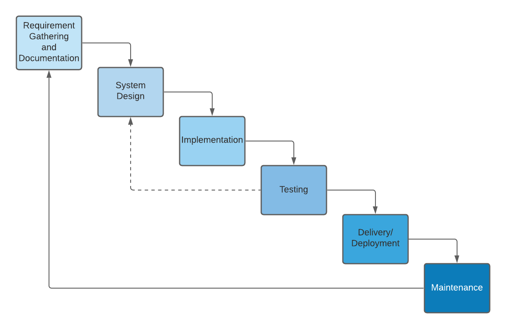
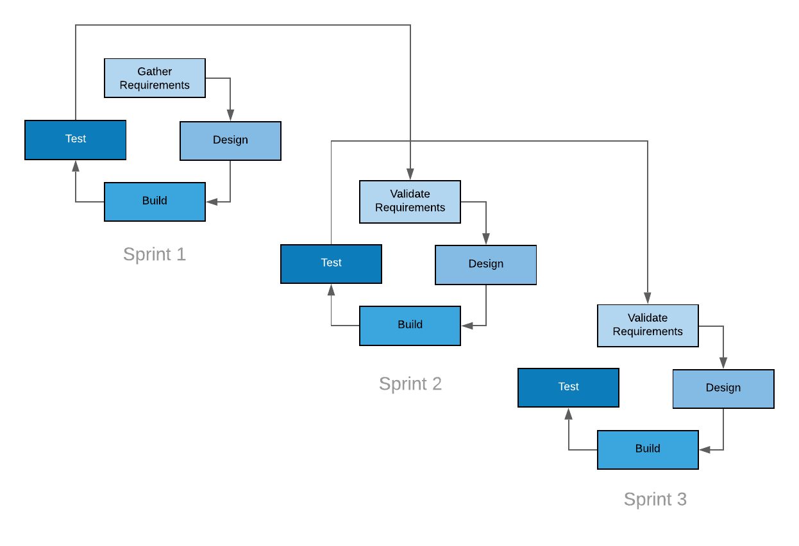
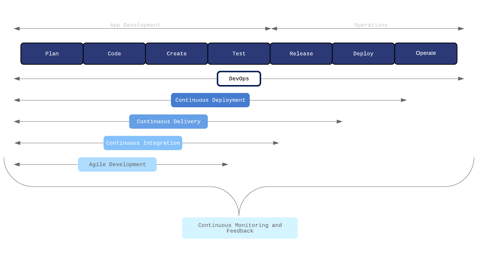
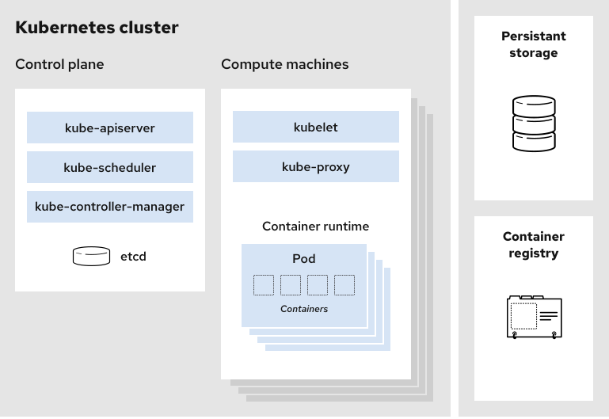
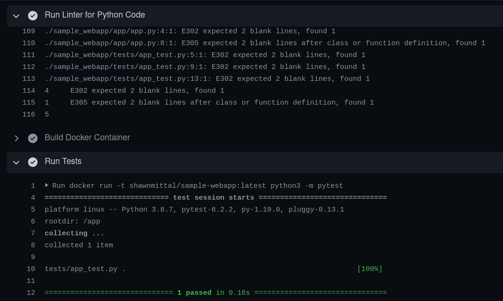
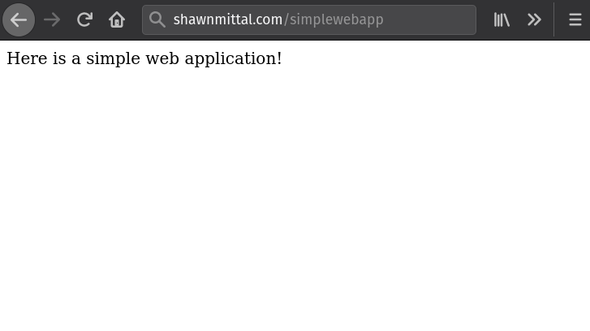

Modern Software Development
A Brief Overview of Software Development Concepts
Created by Shawn Mittal
Sr. Lead Data Scientist
Booz Allen Hamilton
Agenda
Definitions
General
- Continuous Integration (CI) – Process of integrating code into a shared repository on a continual basis. Often includes testing the code as well.
- Continuous Deployment (CD) – Process of deploying code upon integration of new code into a shared repository after automated testing.
- Version Control – System that records changes to a file or set of files over time and allows recall of specific versions later on.
- Git – An open source version control system designed to handle software development projects.
Containers
- Container – A standard unit of software that packages up code and all its dependencies so the application runs quickly and reliably from one computing environment to another.
- Container Image – Unchangeable (immutable) file that contains source code, libraries, dependencies, tools, and other files needed for an application to run.
- Container Runtime – System that is responsible for all the parts of running a container that isn't actually running the program itself.
- Open Container Initiative (OCI) – Open governance body that maintains two specifications: the container runtime spec, and the container image specification.
Container Orchestration
- Container Orchestration – The automation of much of the operational effort required to run containerized workloads and services (deploying, scaling, networking, load balancing, etc).
- Kubernetes – An open source container orchestration system.
Waterfall
- Traditionally, software development was planned, managed, and executed using the waterfall methodology.
- Waterfall approach suited for when requirements and scope are fixed.
- Criticism:
- Requirements often change during development. Waterfall is not agile enough to accommodate shift in requirements.
- The design phase may not sufficiently address the requirements as intended by the client until implementation has already started.
Agile
- Agile approach was developed to address shortcomings of waterfall.
- Advocates adaptive planning, evolutionary development, early delivery, and continual improvement, and it encourages flexible responses to change.
- Criticism:
- Agile practices can be inefficient in large organizations and certain types of developments.
- The increasing adoption of agile practices has also been criticized as being a management fad without considering results.
DevOps
Goals
- Improved deployment frequency
- Faster time to market
- Lower failure rate of new releases
- Shortened lead time between fixes
- Faster mean time to recovery
Containers

Kubernetes
Lets Build an App
Plan
What do we want our application to do?
Let's write an app that returns a string after visiting a url. We will use Flask, a Python framework for building lightweight websites.
Code/Create
Let's write the app. We've written a hello world function that returns a string of text.
from flask import Flask
app = Flask(__name__)
@app.route('/')
def hello_world():
return "Here is a simple web application!"
if __name__ == '__main__':
app.run()
Now we need to write a test for our application. Since it's not doing anything complex, we'll just check to see that the application is returning an http 200 response code.
import pytest
from app import app
@pytest.fixture
def flask_app():
yield app.app
@pytest.fixture
def client(flask_app):
return flask_app.test_client()
def test_index(flask_app, client):
res = client.get('/')
assert res.status_code == 200
While we don't have to, let's go ahead and containerize our web application. We'll write a Dockerfile to define what the container image should contain. We also need to make sure we expose the correct port so that the outside world can access our web application through the container.
FROM tiangolo/uwsgi-nginx:python3.8-alpine
# Set environment information
ENV LISTEN_PORT=5000
EXPOSE 5000
ENV UWSGI_INI uwsgi.ini
# Install python packages
WORKDIR /app
COPY requirements.txt .
RUN pip3 install --upgrade pip && \
pip3 install --no-cache-dir -r ./requirements.txt
# Add web application to image
COPY . .
Test/Release/Deploy
The crux of CI/CD is automation. In order to automate the build, test, deploy process, GitHub provides a CI/CD capability called GitHub Actions that allows us to define steps in our pipeline via YAML.
name: CI
on:
push:
branches: [ main ]
jobs:
build:
runs-on: ubuntu-latest
steps:
- name: Checkout
uses: actions/checkout@v2
# not using standard actions/python@v2. causes dependency problems with some packages
- name: Install Python and Dependencies
run: |
sudo apt-get update
sudo apt-get install python3.8 python3-pip
sudo rm /usr/bin/python
sudo ln -s /usr/bin/python3.8 /usr/bin/python
- name: Run Linter for Python Code
run: |
pip3 install flake8
sudo apt-get install flake8
# stop the build if there are Python syntax errors or undefined names
flake8 . --count --select=E9,F63,F7,F82 --show-source --statistics
# exit-zero treats all errors as warnings. The GitHub editor is 127 chars wide
flake8 . --count --exit-zero --max-complexity=10 --max-line-length=127 --statistic
- name: Build Docker Container
run: |
cd sample_webapp
docker build -t shawnmittal/sample-webapp:latest .
- name: Run Tests
run: docker run -t shawnmittal/sample-webapp:latest python3 -m pytest
Let's see the output of our automated static code analysis and tests.
Operate
We've deployed our webapp!
